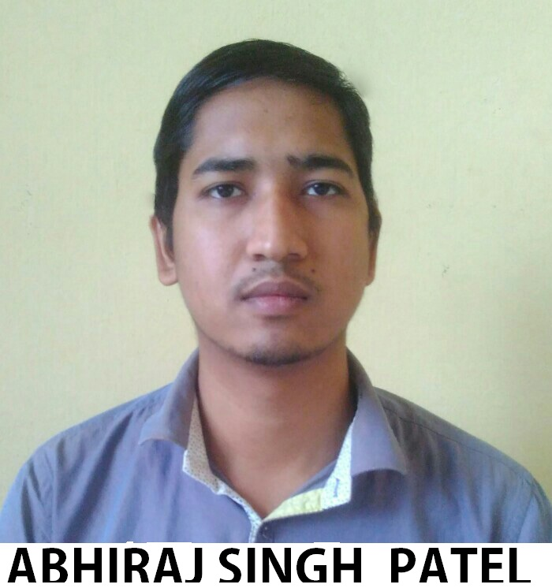

ABHIRAJ SINGH PATEL | 13MT10001
METALL. & MATERIALS ENGG.(B.Tech 4Y)

Year
2017
2013
2011
Degree/Exam
B.TECH
AISSCE
AISSE
Institute
IIT Kharagpur
Swami Harsewanand Public School, Varanasi
Swami Harsewanand Public School, Varanasi
CGPA/Marks
8.26 / 10
83.4%
10 / 10
AWARDS AND ACHIEVEMENTS
Competitive exams rank (2013)
IIT-JEE- AIR 2007 (top 1%), UPSE (UPTU) AIR-357.
Academic improvement (2016)
Steady growth of CGPA from 7.27 to 8.26
Student Seminar, Behind the Teacher Desk
Awarded first Prize in Oral presentation on Modeling and Simulation in "Behind the Teacher Desk" (BTTD-2016) held at CSIR-National Metallurgical
Laboratory, Jamshedpur.
SKILLS AND EXPERTISE
Software skill:
Programming languages: HTML- beginner, C- intermediate, c++ -Intermediate.
Software and packages: Adobe Photoshop, Autodesk Maya, SOLIDWORKS,COMSOL Multiphysics.
Course Undertaken:
Programming and data structure, Effective Learning Techniques for Professional Development, Probability and Stochastic. Economics.
Additional skills:
• Excellent communication skill.(given seminars) • Highly organized and efficient.(inventory incharge). • Ability to work independently or as a part of team
• Proven leadership skill and ability to motivate.(Counsellor) • Proven highly critical thinker with effective researching skill. • Proven interpersonal and
relationship building skill.(smoothly manage accomodation).
POSITIONS OF RESPONSIBILITY
Event Manager
Organized events of Kolkata Youth Fest during annual Kolkata rath yatra which attracts many visitors with students from various colleges in Eastern India
.
Event Manager
Managing Officer for 40 Volunteers overseeing the crowd management and Smooth Conduct of “SPHURTI” in Puri, Including 350 students from
various colleges.
Executive Member
Manage the 18 student volunteer for the smooth conduct of the event (“ PRERANA ”) in Kolkata and manage for the provision of accommodation and
commodities of the 200 people.
INTERNSHIPS AND PROJECTS
TATA STEEL LTD.,Jamshedpur (May-June 2016
Study the Grain growth kinetics of Isotropic Polycryastalline Material By Phase Feild Modeling
- Developed a C-code to investigate the grain growth in 2-D by computer simulation, based on continuum Diffused Interface Field Model
- Developed a model to count the number of Grain, based on Hoshen-Kopelman Algorithm using C-language.
- Modified the preexisting models (C-code) for simulation of Grain growth, which reduces the computational (CPU) time by 1/3rd
- Developed an efficient algorithm for computer simulation of the grain growth kinetics, which reduces the CPU time by 1/6 th of classical model.
CERTIFICATIONS
Object Oriented Programming And Data Structure in C++ - IIT- Khragapur (june-2014)
Programming, Data Structure and Algorithms in C/C++ - NPTEL